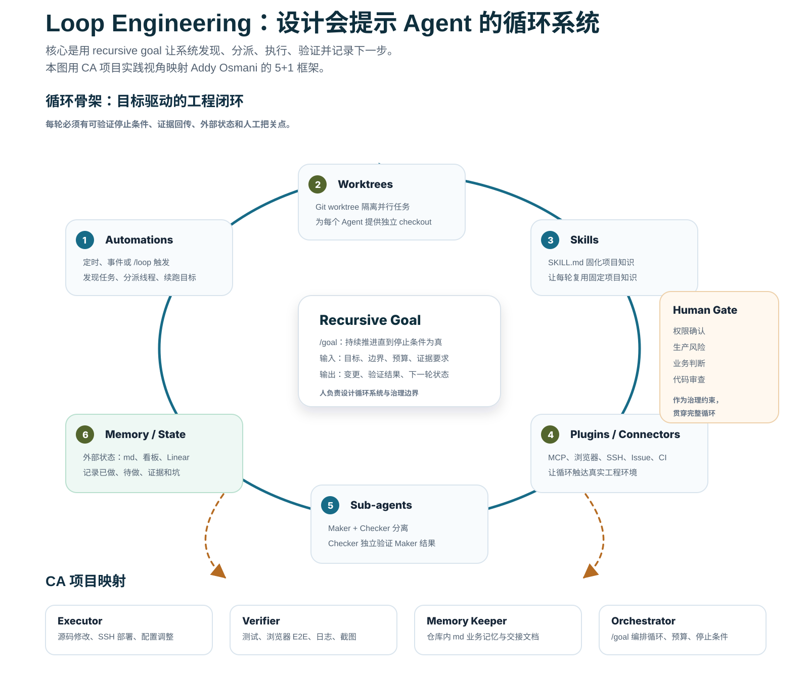

“replacing yourself as the person who prompts the agent.”
这句话抓住了 Loop Engineering 的边界：人转而设计会提示 Agent 的系统，取代每一步手动提示。早期 Geoffrey Huntley 的 Ralph loops 可以作为先声，而 2026 年 6 月的讨论已经更强调系统化组件。
Loop Engineering 的核心是设计一个会持续提示、执行、验证并记录状态的 AI 工程循环，它超越了单纯把 prompt 写得更长的思路。 它的核心目标是让人转向设计递归目标、工具连接、隔离执行和证据闭环，取代逐步 prompting。
更准确地说，它是在设计一个能替代人工逐步 prompting 的循环系统：系统自己读取状态、触发 Agent、分派任务、执行验证，并把下一步写回外部状态。
“replacing yourself as the person who prompts the agent.”
这句话抓住了 Loop Engineering 的边界：人转而设计会提示 Agent 的系统，取代每一步手动提示。早期 Geoffrey Huntley 的 Ralph loops 可以作为先声，而 2026 年 6 月的讨论已经更强调系统化组件。
Peter Steinberger 与 Boris Cherny 的讨论把它推向工程实践。
Peter Steinberger 关注自动循环里的真实生产效率；Claude Code 负责人 Boris Cherny 则把 Agent 迭代为更能持续工作的工程搭档。页面下文采用这个”系统循环”视角，把它作为系统循环框架来呈现。

/goal 可以被看成一个 recursive goal 容器：直到停止条件满足，Agent 会持续读取上下文、执行下一步、验证结果并更新状态。
把业务目标、交付物、停止条件、预算上限和证据要求写进目标描述，让循环知道何时继续、何时停止。
要求 Codex 先读取项目 SKILL.md、仓库内 md 业务记忆、源码、配置和日志，再输出证据状态与必要假设。
每条任务优先进入独立 worktree；通过 SSH、浏览器、Git、CI、日志平台等连接器完成真实操作。
最终输出必须包含 diff 摘要、测试/E2E/日志证据、残留风险和记忆更新；仅在证据充足时宣布目标完成。
/goal 基于新版 UI 源码完成某业务模块需求开发：
1. 先从页面、接口、状态管理和路由中总结系统需求；
2. 给出最小设计方案和影响范围；
3. 在独立 Git worktree 中修改代码并补充必要测试；
4. 通过 SSH / CI / 日志连接器部署到 CA 测试服务器；
5. 由 Checker 用浏览器 E2E、截图、网络请求和服务端日志验证关键流程；
6. 停止条件：测试通过、主流程可用、高风险日志数量为零、业务记忆已更新；
7. token 预算：每轮先复用 md 记忆和摘要，确保上下文高效利用。
CA 项目当前实践可以作为 Loop Engineering 的起点样例：从源码理解到系统需求、从实现调整到远程部署、从浏览器 E2E 到 md 记忆沉淀，形成一条可重复的工程循环。
关键原则：AI 要交付“需求如何得出、设计为何这样、在哪个分支或工作区实现、部署是否成功、用户路径是否可用、下一轮状态写到哪里”的完整证据链。
Loop Engineering 的风险来自”循环会持续运行”。因此页面需要强调成本、权限、证据和停止条件，与自动化效率并重。
下一步可以把 Loop Engineering 扩展成面向进度看板、缺陷卡片和发布流程的自动化平台能力，让 AI 围绕真实项目流持续工作，但仍保留人工 gate。
以需求卡片、缺陷卡片、优先级、负责人、环境信息和验收标准作为触发输入，自动创建 /goal 与隔离 worktree。
Planner 读取缺陷描述、复现步骤、截图、日志和关联版本；Maker 修复；Checker 复现并验证主流程和回归点。
在仓库内 md 业务记忆稳定沉淀后，把问题现象、根因、修复方式、验证路径、环境差异和项目约定接入 QA 机器人知识库。
使用 GitLab issue 和 PR 承载需求确认、修复方案、代码评审、验证证据和发布确认，让人机协作过程可追踪、可审查、可复用。
ONES 卡片、代码仓库、worktree、部署环境、测试账号、日志入口、仓库内 md 业务记忆。
自动触发、目标拆解、上下文收集、子代理分工、远程部署、E2E 验证、风险报告。
修复结果、验证证据、变更说明、业务记忆更新、看板状态和下一步待办。